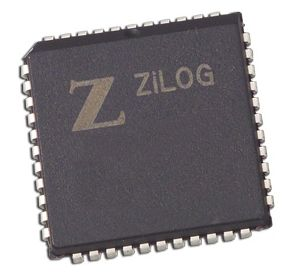
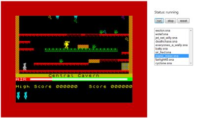

A weblog focused on interesting circuits, ideas, schematics and other information about microelectronics and microcontrollers.
E-books
Disclaimer
Because I have not tested all electronic circuits mentioned on this pages, I cannot attest to their accuracy; therefore, I do not provide a warranty of any kind and cannot be held responsible in any manner.
Z80
Z80 + ATMega644 as CP/M Boot Loader
6. March 2011 - 19:40 — adminWhy to prepare an address decoder for specific regions to switch between RAM and ROM? You can use 64kB SRAM chip for the whole space, kickstarted by ATMega. The way shows Ben Ryves.
Z80 System on a Chip
18. September 2010 - 14:07 — adminSimple goal: To make a Z80 computer, with an interpreter, video out, keyboard, and some kind of external mass storage.
Emulating a Z80 CP/M computer on ATMega88
30. April 2010 - 11:21 — adminYes, we all know many emulators of old processors "on the chip", but as far as I remember this is the first attempt to emulate a CP/M machine (including Z80) I ever seen.

ZiCog: Z80 in the Propeller chip?
16. December 2009 - 14:51 — adminZiCog is a (or better say: "wants to be a") Z80 emulator for the Propeller chip by Parallax.

Javascript emulators
14. May 2009 - 22:08 — adminThe emulator of the great machines of the past can be written in (interpreted) JavaScript now...

Unsorted...
19. April 2009 - 20:13 — adminI'm going to my holidays tomorrow, so here are a lot of unsorted links and references I found in my sources. Some ZX Spectrum-related materials, vintage computer and VHDL tip. Enjoy!

V6Z80P - the "ZX Spectrum version 2009"
8. April 2009 - 19:52 — adminRetroleum's terrific Z80-based single board computer. Simply amazing!

Z80 code bits from MICROCode
11. December 2008 - 23:32 — adminSome old software from MICROCode for your CP/M computers
Old good times
29. October 2008 - 17:42 — adminRemember the old good times with all these amazing computers like ZXS, C64, BBC etc.? Get 8-bit nostalgia now!
Great 8bit projects
17. August 2008 - 15:08 — adminTwo old good Z80 projects and two vintage 6502 projects by Hackman's Realm. Enjoy the past time...